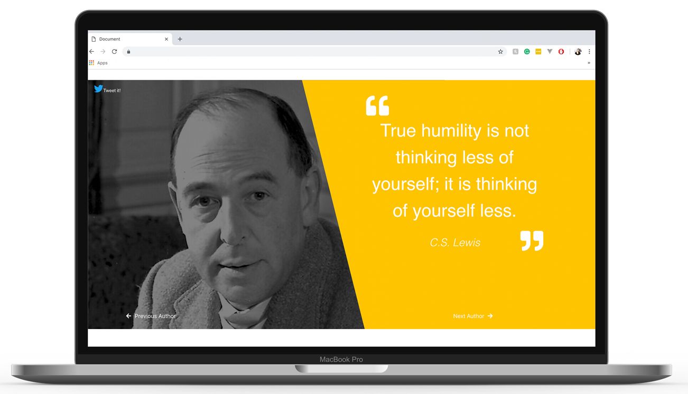
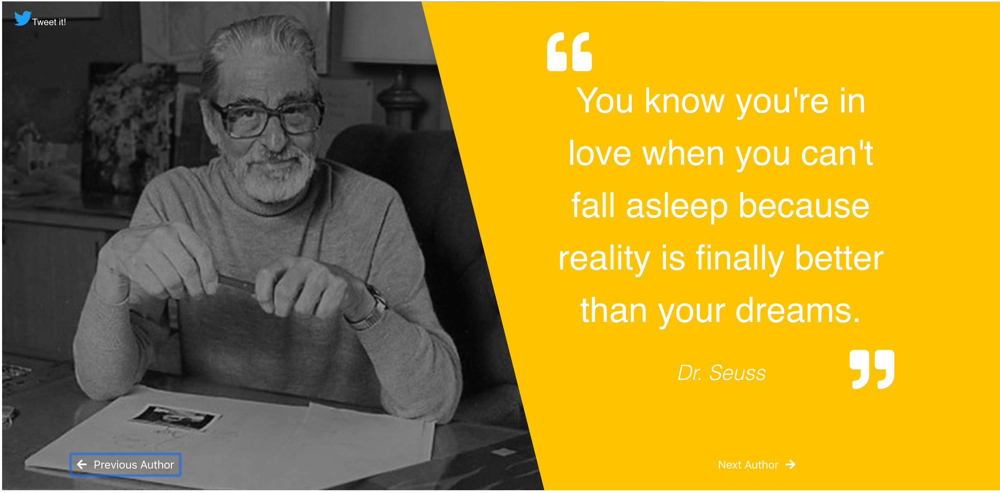
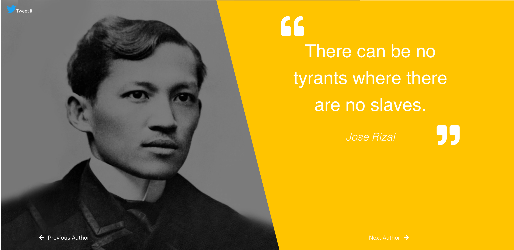
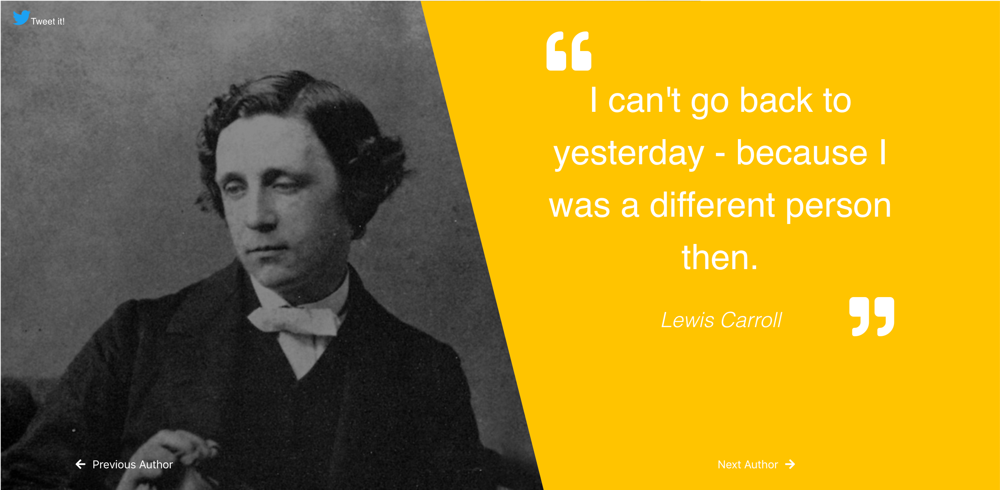

Objective
The goal of this project is be able to create a machine with the ability to go "Next" or "Previous" and be able to Tweet it.

Solution
I knew I had to do something a bit "dramatic" or "documentary" style so I added the authors' images beside their quote. By doing so, it brings the quote to life and you can almost hear them say it. I added the bright golden yellow background to catch your attention and focus on the quote instead of the person. It's not face we should look at!

In Conclusion
This project turned out to be one of my favorite because I am able to add more quotes to it. It can become my quote album. The Quote Machine is not just a collection though, it brings the quotes to life and hopefully inspire people.